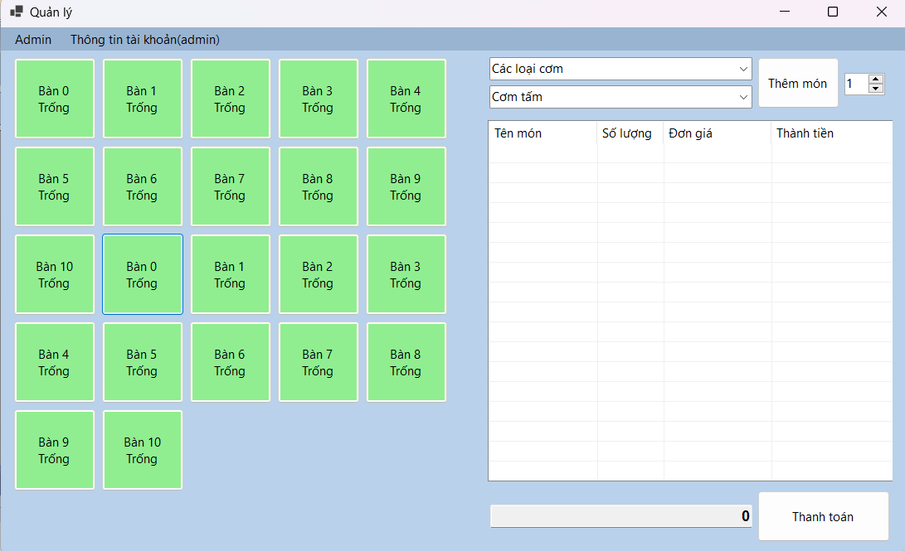

Hướng dẫn sử dụng Màn hình chính.
Màn hình chính thể hiện danh sách bàn và danh sách hóa đơn:
Tại đây có thể lựa chọn các loại thức ăn và thức ăn, có thể chọn bàn để thêm thức ăn và nước uống vào.
Có thể thêm hoặc giảm các món ăn trong hóa đơn.
Khi các món ăn được thêm vào danh sách thì cũng tự động hiện thành tiền ở bên dưới.
Sau khi thanh toán hóa đơn thì danh sách món ăn cũng bị xóa.